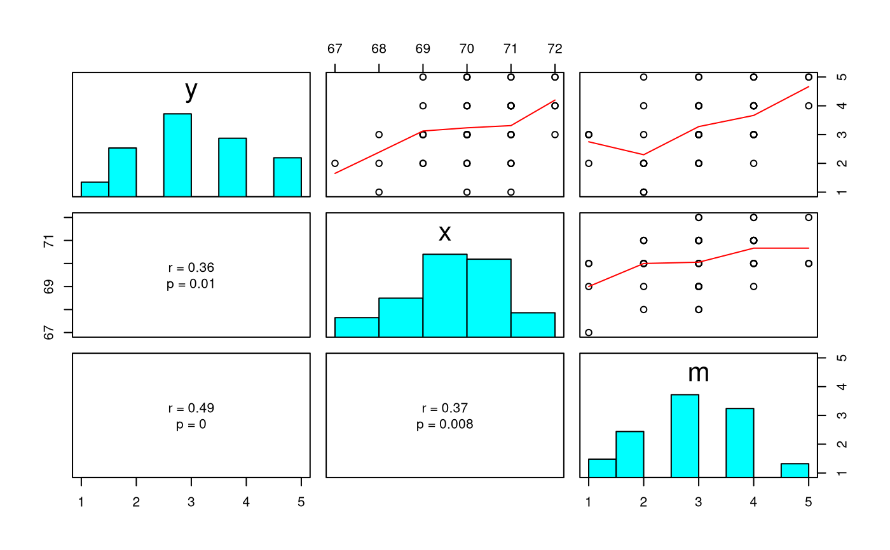
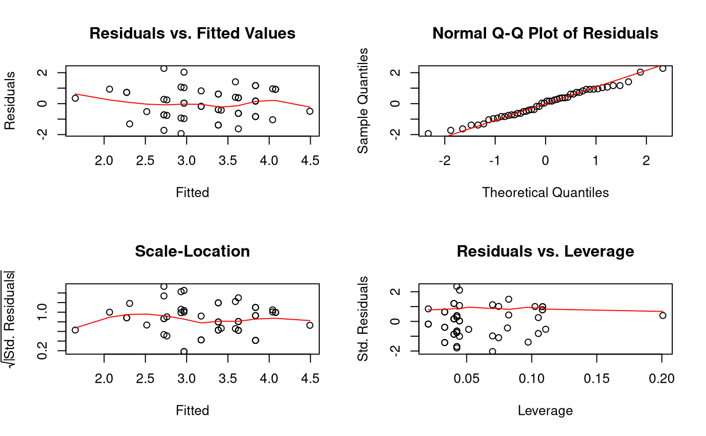
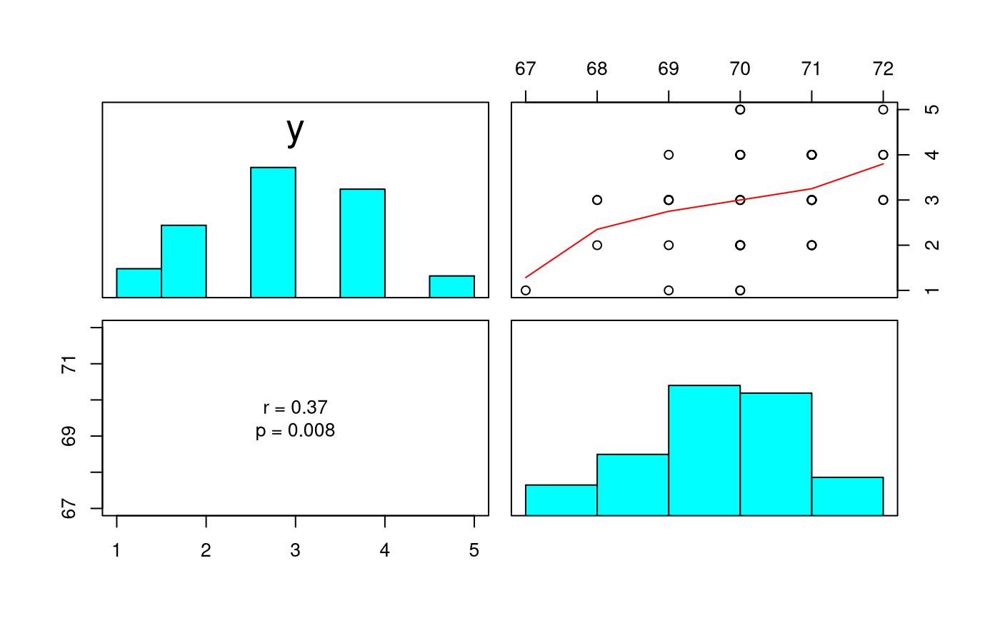
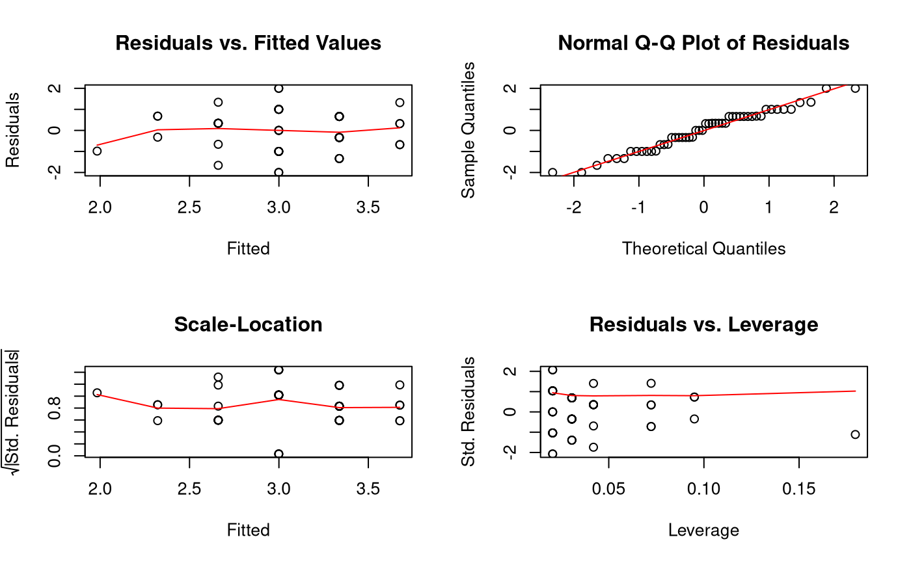
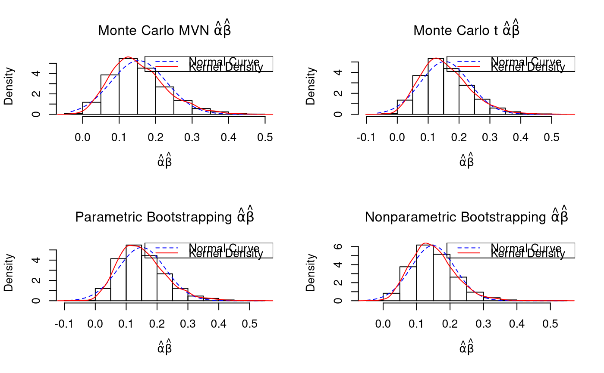

Fits the simple mediation model.
fit( data, alpha = c(0.001, 0.01, 0.05), R = 5000, B = 5000, plot = TRUE, par = TRUE, ncores = NULL, blas_threads = TRUE, mc = TRUE, lb = FALSE )
| data |
|
|---|---|
| alpha | Numeric vector.
Alpha level.
By default |
| R | Integer. Monte Carlo replications. |
| B | Integer. Number of bootstrap samples. |
| plot | Logical. Plot the sampling distribution of the indirect effect. |
| par | Logical.
If |
| ncores | Integer.
Number of cores to use if |
| blas_threads | Logical.
If |
| mc | Logical.
If |
| lb | Logical.
If |
The fitted simple mediation model is given by $$ y_i = \hat{\delta}_{y} + \hat{\dot{\tau}} x_i + \hat{\beta} m_i + \hat{\varepsilon}_{y_{i}} $$
$$ m_i = \hat{\delta}_{m} + \hat{\alpha} x_i + \hat{\varepsilon}_{m_{i}} $$
The estimated parameters for the mean structure are $$ \boldsymbol{\hat{\theta}}_{\text{mean structure}} = \left\{ \hat{\mu}_{x}, \hat{\delta}_{m}, \hat{\delta}_{y} \right\} . $$
The estimated parameters for the covariance structure are $$ \boldsymbol{\hat{\theta}}_{\text{covariance structure}} = \left\{ \hat{\dot{\tau}}, \hat{\beta}, \hat{\alpha}, \hat{\sigma}_{x}^{2}, \hat{\sigma}_{\hat{\varepsilon}_{m}}^{2}, \hat{\sigma}_{\hat{\varepsilon}_{y}}^{2} \right\} . $$
Other model fit functions:
.fitfiml(),
.fitsem(),
.fit(),
mvn_fit_simulation_summary(),
mvn_fit_simulation(),
mvn_fit_task_summary(),
mvn_fit_task(),
mvn_fitfiml_mar_simulation(),
mvn_fitfiml_mar_task(),
mvn_fitfiml_mar(),
mvn_fitfiml_mcar_simulation(),
mvn_fitfiml_mcar_task(),
mvn_fitfiml_mcar(),
mvn_fit()
#> #> y ~ x + m ####################################################### #> #> Model Assessment: #> Value #> RSS 45.62 #> MSE 0.91 #> RMSE 0.96 #> R-squared 0.28 #> Adj. R-squared 0.25 #> #> ANOVA Table: #> df SS MS F p #> Model 2 17.49805 8.7490274 9.0133 0.0004860265 #> Error 47 45.62195 0.9706797 NA NA #> Total 49 63.12000 NA NA NA #> #> Coefficients: #> coef se t p #> Intercept -12.7128845 9.1969072 -1.382300 0.17341365 #> x 0.2076475 0.1332597 1.558217 0.12589058 #> m 0.4510391 0.1459740 3.089858 0.00335961 #> #> Standardized Coefficients: #> Yuan and Chan 2011 standard errors are used. #> coef se t p #> x 0.2080748 0.1301895 1.598246 0.116690426 #> m 0.4126006 0.1226220 3.364817 0.001532862 #> #> Confidence Intervals - Regression Coefficients: #> ci_0.05 ci_0.5 ci_2.5 ci_97.5 ci_99.5 #> Intercept -44.99312081 -37.40249332 -31.21467525 5.7889063 11.9767244 #> x -0.26008074 -0.15009545 -0.06043633 0.4757314 0.5653905 #> m -0.06131543 0.05916362 0.15737716 0.7447010 0.8429145 #> ci_99.95 #> Intercept 19.5673519 #> x 0.6753758 #> m 0.9633936 #> #> Confidence Intervals - Standardized Slopes: #> ci_0.05 ci_0.5 ci_2.5 ci_97.5 ci_99.5 ci_99.95 #> x -0.24887750 -0.14142616 -0.0538327 0.4699823 0.5575757 0.6650270 #> m -0.01779058 0.08341498 0.1659169 0.6592843 0.7417862 0.8429918 #> #> Means and Standard Deviations: #> Mean SD #> y 3.24 1.134973 #> x 70.18 1.137308 #> m 3.06 1.038248#> #> m ~ x ########################################################### #> #> Model Assessment: #> Value #> RSS 45.55 #> MSE 0.91 #> RMSE 0.95 #> R-squared 0.14 #> Adj. R-squared 0.12 #> #> ANOVA Table: #> df SS MS F p #> Model 1 7.266198 7.2661975 7.656386 0.008010603 #> Error 48 45.553802 0.9490376 NA NA #> Total 49 52.820000 NA NA NA #> #> Coefficients: #> coef se t p #> Intercept -20.7024298 8.5888462 -2.410385 0.019815487 #> x 0.3385926 0.1223674 2.767017 0.008010603 #> #> Standardized Coefficients: #> Yuan and Chan 2011 standard errors are used. #> coef se t p #> x 0.3708979 0.1232306 3.009787 0.004157814 #> #> Confidence Intervals - Regression Coefficients: #> ci_0.05 ci_0.5 ci_2.5 ci_97.5 ci_99.5 ci_99.95 #> Intercept -50.80691941 -43.7394676 -37.97146243 -3.4333971 2.3346080 9.4020598 #> x -0.09031329 0.0103784 0.09255655 0.5846287 0.6668068 0.7674985 #> #> Confidence Intervals - Standardized Slopes: #> ci_0.05 ci_0.5 ci_2.5 ci_97.5 ci_99.5 ci_99.95 #> x -0.0610338 0.04036824 0.1231261 0.6186697 0.7014276 0.8028296 #> #> Means and Standard Deviations: #> Mean SD #> y 3.06 1.038248 #> x 70.18 1.137308#> #> Indirect Effect ################################################# #> est se reps ci_0.05 ci_0.5 ci_2.5 ci_97.5 #> mcmvn 0.1527185 0.07584901 5000 -0.022699671 0.0041262044 0.02923929 0.3243474 #> mct 0.1527185 0.07911263 5000 -0.042164380 0.0006442683 0.02369503 0.3303736 #> pbpc 0.1527185 0.07610777 5000 -0.058169373 0.0027202502 0.02487291 0.3247951 #> pbbc 0.1527185 0.07610777 5000 -0.020443122 0.0145487196 0.04186852 0.3645759 #> pbbca 0.1527185 0.07610777 5000 -0.021846783 0.0144073201 0.04125346 0.3640348 #> nbpc 0.1527185 0.06526012 5000 -0.031276088 0.0120508972 0.03932219 0.2943917 #> nbbc 0.1527185 0.06526012 5000 -0.009006593 0.0289335077 0.05177204 0.3248391 #> nbbca 0.1527185 0.06526012 5000 -0.009736419 0.0288877072 0.05146461 0.3236745 #> ci_99.5 ci_99.95 zero_hit_99.9 zero_hit_99 zero_hit_95 len_99.9 #> mcmvn 0.3863041 0.4575089 1 0 0 0.4802086 #> mct 0.4075757 0.5071652 1 0 0 0.5493296 #> pbpc 0.3989575 0.4645092 1 0 0 0.5226785 #> pbbc 0.4317483 0.4990196 1 0 0 0.5194627 #> pbbca 0.4316599 0.4945271 1 0 0 0.5163739 #> nbpc 0.3544464 0.4260471 1 0 0 0.4573232 #> nbbc 0.3830918 0.4604257 1 0 0 0.4694323 #> nbbca 0.3794233 0.4520316 1 0 0 0.4617681 #> len_99 len_95 shape_99.9 shape_99 shape_95 #> mcmvn 0.3821779 0.2951081 1.737508 1.571990 1.389942 #> mct 0.4069315 0.3066786 1.818768 1.675874 1.376921 #> pbpc 0.3962373 0.2999222 1.478467 1.641613 1.345972 #> pbbc 0.4171996 0.3227074 1.999872 2.019471 1.911208 #> pbbca 0.4172526 0.3227814 1.958056 2.016767 1.895808 #> nbpc 0.3423955 0.2550695 1.485525 1.434075 1.249363 #> nbbc 0.3541583 0.2730671 1.902656 1.861076 1.705069 #> nbbca 0.3505356 0.2722099 1.842438 1.830763 1.688390